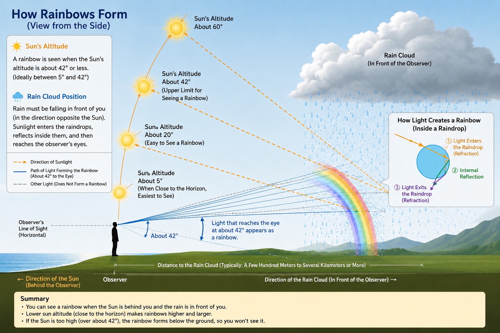
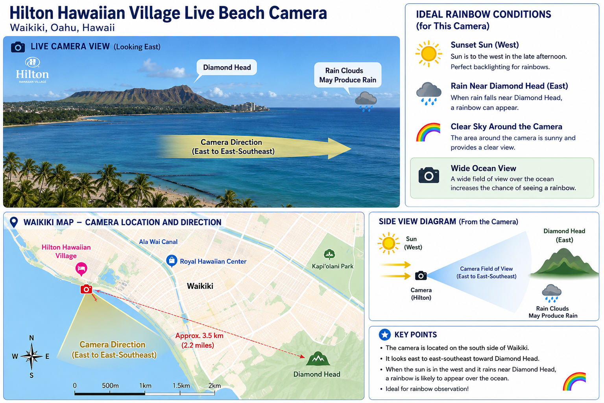

We can't promise a rainbow. But we can tell you
when the conditions are just right to step outside.
No app download · Works in any browser · Free
Hawaii is called the Rainbow State for a reason — the Ko'olau mountains force warm trade winds upward, creating rain on one side of the island while the sun shines on the other. Over 200 rainbow days a year in areas like Kailua and Kāne'ohe.
But rainbows aren't in weather forecasts. This map fills that gap. It checks the actual conditions — sun angle, cloud cover, and rainfall — across Oahu every 10 minutes and scores each area from 0 to 100.
It won't guarantee a rainbow. But when the score is high, it's worth stepping outside.
Four conditions are checked to calculate each area's rainbow score.
Each colored dot represents a 2km area and its current rainbow score. Tap any dot for details.
A rainbow forms when sunlight enters a raindrop, reflects inside it, and exits at an angle of about 42° toward your eyes. That's why the sun must be behind you and the rain in front of you — and why the sun's altitude matters so much.

The EarthCam Waikiki Beach camera faces east — the exact direction rainbows appear during late afternoon when the sun is behind you in the west. If the score is high and you see color on the cam, go outside.
📍 Approx. camera location on Waikiki Beach · Orange cone = east-facing field of view

Early morning and late afternoon after a shower —
that's when Oahu puts on a show.